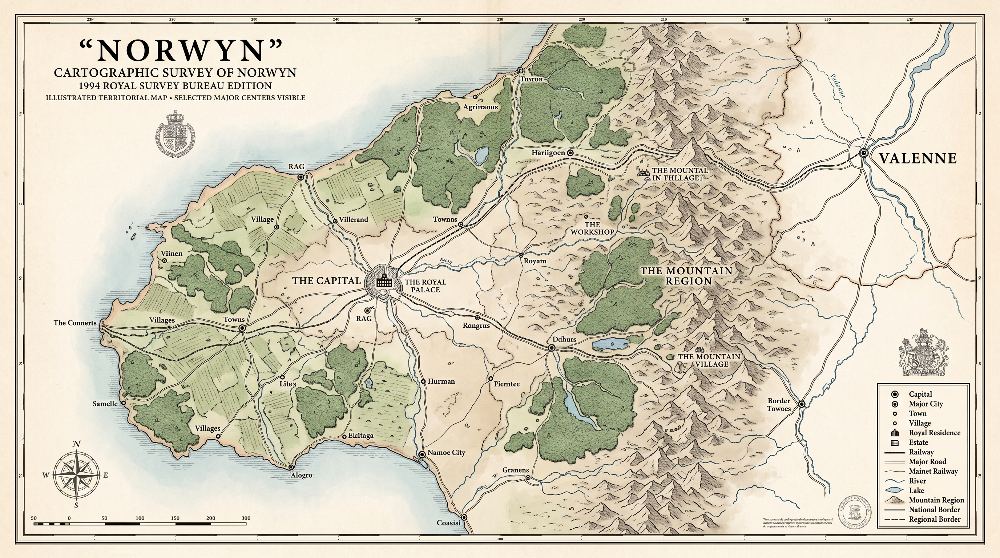

A psychological novel of duty, doubt, and choice
Or So She Thought
Set in 1990s Norwyn, where duty is inherited and futures are arranged before they are questioned. A story about what happens when a young woman begins to look closely at the life she was prepared to want.
01 — The Web Novel
The Life She Is Supposed to Want
Elizabeth has spent most of her life knowing what is expected of her. As a royal, a student, and a future bride, she has learned how to read a room and understand what a situation requires. But across 26 meticulously written chapters, the certainty of her world begins to unravel.
Featuring Edward of Valenne, Elias, and the quiet weight of expectation.
Explore Norwyn & World"She was never forbidden to choose. She was simply taught what the right choice looked like."
— central thematic core of Or So She Thought
02 — The World
Explore the Kingdom of Norwyn
A kingdom shaped by inheritance, tradition, commerce, and the people who have learned how to live within them. From the busy stone quays of the capital to the quiet administrative halls of the palace and the rugged mountains beyond.

- 01 The Capital Stone quays beside the river, bustling with commerce, government offices, river traffic, and everyday city life.
- 02 The Palace The seat of royal authority, featuring formal state rooms, the royal library, family quarters, and household staff.
- 03 Valenne Norwyn's neighboring kingdom across the border, bound by historical treaties, trade, and diplomatic obligations.
- 04 The Mountains A colder, more demanding landscape where survival is shaped by communal work, weather, and physical labor.
03 — Characters
Meet the People of Norwyn
They love her. They need things from her. They protect her. They misunderstand her. None of them can be reduced to what they want from Elizabeth.
Elizabeth
A daughter, royal, student, and future bride who knows how to anticipate what a situation requires—until quiet compliance starts to feel like an exhausting form of labor.
Queen Anne
Elizabeth's mother, driven by duty and a fierce belief that discipline is the highest form of protection, blurring the line between devotion and constraint.
Edward of Valenne
The man Elizabeth is expected to marry. Intelligent, observant, and politically aware, he brings consequences far beyond a personal arrangement.
Elias
Coming from a world outside palace walls, Elias is independent, observant, and unimpressed by the rigid distinctions of the royal household.
04 — The Archive
The Norwyn Archive
Fictional artifacts and records from the world of the novel, preserving what the institution chose to remember—and what it tried to manage.
Cartographic Survey
1994 Royal Survey Bureau Edition detailing territorial borders, county boundaries, shipping straits, and mountain passes.
The Norwyn Herald
Dispatches and public columns from March 1994 capturing society news, official announcements, and capital gossip.
Royal Household Records
Confidential household orders, protocol manuals, and seating arrangements governing state banquets.
Personal Papers
Unread letters left on cedar desks and fragments of private notebooks carrying unspoken doubts.
05 — Behind the Scenes
Where It Began
Novels are built through accumulation, revision, and accident. Or So She Thought changed because I kept following Elizabeth as her inner life became more interesting than the plot originally planned.
Includes reflections on The Mended Blouse, developing Norwyn, writing Anne, and the evolution of the title.
06 — Inquiries
Beyond the Novel
Questions the novel leaves behind that appear in ordinary lives too.
- 01 Desire & Influence How much of what we call preference was learned, and where does influence end and true choice begin?
- 02 Inherited Life Can a life chosen for you by circumstance and family become genuinely your own?
- 03 Love & Control The person who knows you best may feel most entitled to decide for you. Where does care become control?